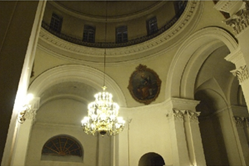
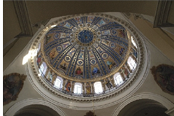

Костел святого Олександра
Адреса: вулиця Трьохсвятительська, Київ, 01-001
Перлина класицистичної архітектури під загрозою
Костел святого Олексндра — католицький собор в Києві, Україна. Належить до Києво-Житомирської дієцезії Римо-Католицької Церкви. Розташований на вулиці Костьольній Шевченкіського району столиці. Збудований 1842 року. Один
із двох київських римо-католицьких храмів XIX століття. Виконаний в стилі класицизму, хрестовидний (квадратна) в плані,
з високою головною банею та двома баштами, портиком при вході. Найстаріша з католицьких святинь Києва, що зберег-
лися. 2001 року відвіданий папою Іваном Павлом ІІ. Храмове свято — 3 травня. Офіційна назва — Прокафедральний со-
бор святого Олександра. Також називається на польський манер Олександрівським костелом. Таким чином на 1832 рік
Київ залишився без домініканців. Того ж року помер перший настоятель храму, о. Вікентій Головня.
(Матеріал із Вікіпедії, вільної енциклопедії).
1991 р. будівлю було передано римо-католицькій церкві. Реконструкція храму тривала 4 роки. 7 жовтня 1995 р. єпископ-
помічник Житомирської дієцезії Станіслав Широкорадюк поновно освятив костьол Св. Олександра, який було відрестав-
ровано зусиллями віруючих на чолі з тодішнім настоятелм парафії, отцем Яном Крапаном, і за підтримки католиків України
та багатьох країн світу.
Протягом 2011-2016 рр. на соборі Святого Олександра ведуться ремонтно-реноваційні роботи, які повністю нищать
його класицистичний вигляд.
Ініціативна група парафіян безуспішно бореться із цим ґвалтом протягом двох років. Результату нема. Все впирається
у Міністерство культури, яке має подати відповідну заявку у прокуратуру.


